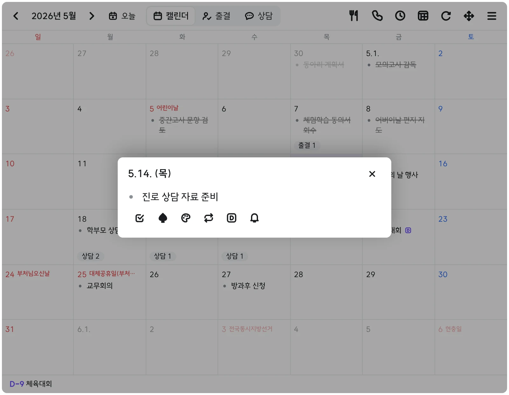
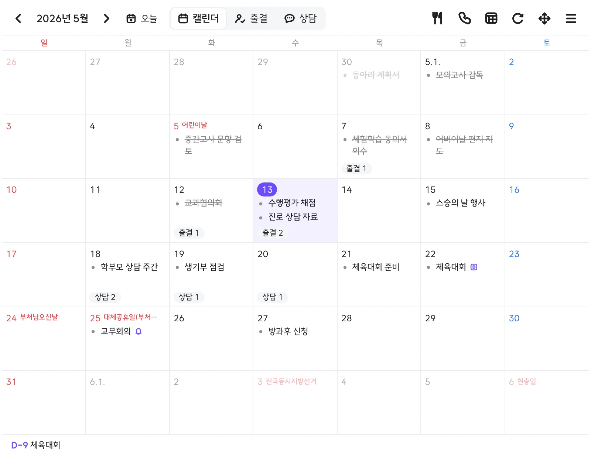

할 일은 세 단계
- 날짜 선택
- 할 일 입력
- 완료 체크

출결은 문장 한 줄
문장으로 입력하면 날짜, 종류, 교시, 사유가 자동으로 기록됩니다.
상담 신청은 링크 하나로
상담 가능한 날짜와 시간으로 신청표를 만들어 학생에게 링크를 보내면, 학생이 빈 시간을 골라 신청합니다. 신청 내용은 내 표에 바로 반영됩니다.


그 밖의 기능

급식 확인학교를 등록하면 주간 급식표를 바로 확인합니다.
시간표와 진도 확인내 시간표를 등록하면 과목별 진도표에 수업 진도를 기록합니다.
할 일 알림할 일에 시간을 지정하면 그 시각에 알림이 표시됩니다.
D-day중요한 날을 D-day로 지정하면 아래 줄에 표시됩니다.
- 급식 확인학교를 등록하면 주간 급식표를 바로 확인합니다.
- 시간표와 진도 확인내 시간표를 등록하면 과목별 진도표에 수업 진도를 기록합니다.
- 할 일 알림할 일에 시간을 지정하면 그 시각에 알림이 표시됩니다.
- D-day중요한 날을 D-day로 지정하면 아래 줄에 표시됩니다.